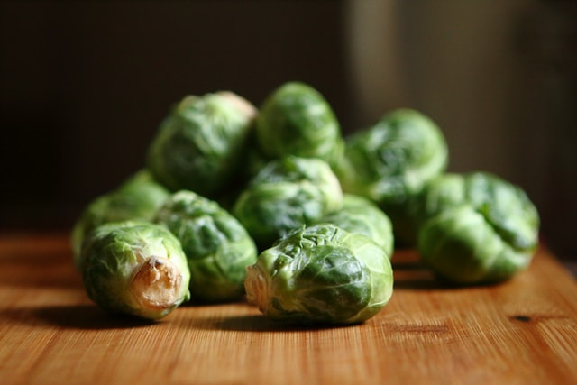

Buckwheat Bowls with Sprouts and Tahini Sauce

Ingredients
For the sauce
- Tahini
- Lemon juice
- Maple syrup
- Garlic, minced
- Cold water
For the bowls
- Buckwheat (grains)
- Sprouts, halved
- Chickpeas (canned)
- Ras el Hanout
- Olive oil
Instructions
Sauce
- Mix the ingredients for the sauce. Set aside.
- Boil the buckwheat according to the instructions on the package.
Crispy spiced chickpeas
- Drain the chickpeas and dry them well in a clean tea towel.
- Mix the spices with the oil.
- Put the chickpeas in a medium bowl and drizzle with the oil and spice mixture. Toss to coat.
- Bake at 200C for about 40 minutes, until golden and crispy. Set aside.
Roasted sprouts
- Toss halved sprouts with some oil to coat them.
- Put them on a baking tin lined with parchment paper.
- Roast in the over (200C) for 15-20 minutes, flipping the sprouts halfway.
Assembling the bowls
- Boil the buckwheat following the instructions on the package.
- Put a large spoonful of buckwheat at the bottom of each bowl.
- Add the toppings and pour the sauce over the contents of the bowl.
Return to home page